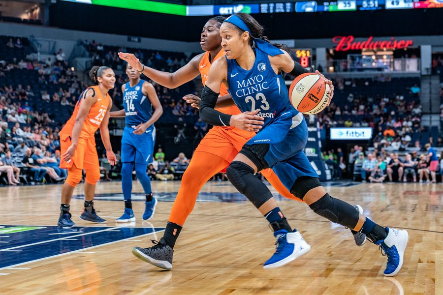
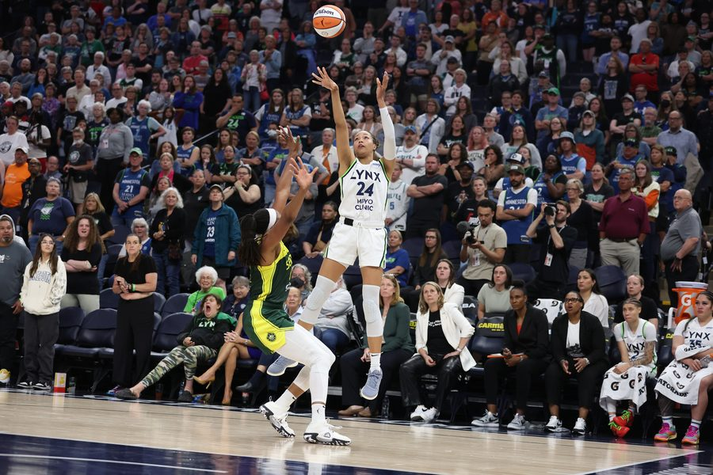
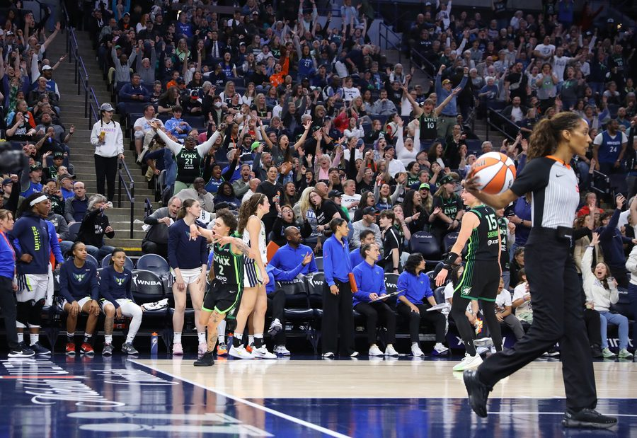

The League
How has the league grown — and for whom?
A player's journey is only possible where a league exists to receive
it. The WNBA has expanded, contracted, and expanded again — and every change
redrew the map of opportunity for women in sports.
Our research question: “How has the growth of the WNBA changed
opportunities for women in sports over time?” — including whether
individualistic stardom, player versatility, or team rivalry dictates box-office
demand, and how individual popularity leverages a player’s autonomy within the
women’s basketball space.
In 1997, eight teams played the WNBA's first season. The league nearly doubled by
2000, riding the optimism of the era — and then a decade of contraction
followed. Miami and Portland folded in 2002, Cleveland in 2003, Charlotte in 2007.
The Houston Comets won the league's first four championships and still disappeared
in 2008; the Sacramento Monarchs, champions in 2005, were gone a year later. Detroit's
three-time champions were relocated to a smaller market. For fifteen years afterward
the league held at exactly twelve teams — a long plateau in which every roster
spot was scarce and every franchise's survival was an achievement. Now the map is
growing again: Golden State in 2025, Toronto and Portland in 2026.
Three decades, one line
Scroll, and the league's life draws itself: orange for arrivals, gray for
the franchises that vanished, blue for the ones that moved.
1997
The league opens
Eight teams play the WNBA's first season. Los Angeles and Phoenix are among
the originals still playing today.
2000
Peak of the boom
Rapid expansion doubles the league to sixteen teams — a size it has
never reached again.
2002–03
The first collapse
Miami and Portland fold. Utah flees to San Antonio, Orlando to Connecticut,
and Cleveland plays its final season.
2006
Charlotte goes dark
An original 1997 franchise, the Sting, plays its last game.
2008
The unthinkable
The Houston Comets — winners of the league's first four
championships — fold. Even dynasties were not safe.
2009
Champions vanish
Sacramento's 2005 champions disappear; Detroit's three-time champions play
their final season in Michigan before moving to Tulsa.
2010–24
The long plateau
Exactly twelve teams for fifteen years. Every roster spot is scarce; every
franchise's survival is an achievement.

The plateau's defining dynasty: Minnesota in the 2010s · Lorie Shaull, Wikimedia Commons
2016 · 2018
The nomads settle
Tulsa becomes Dallas; San Antonio becomes Las Vegas — the franchise
that began as the Utah Starzz finds its fourth home.
2020
The turning point
A landmark collective bargaining agreement nearly doubles top salaries and
begins to end the forced overseas winters.
2024
The surge
A record-breaking rookie class arrives and attendance leaps to heights
unseen in a generation.

Opening night, May 2024 · John Mac, Wikimedia Commons
2025–26
Expansion returns
Golden State, then Toronto — and Portland, whose city lost its team in
2002, gets one back 24 years later. The map begins to heal.

A new era opens, May 2025 · John Mac, Wikimedia Commons
Each team is roughly twelve roster spots: when the league contracts, careers end
overnight; when it expands, doors open. But opportunity is not only about roster
spots — it is about whether a player can afford to stay. For most of league
history, salaries were low enough that stars spent every offseason playing overseas.
The 2020 collective bargaining agreement began to change that.
What we will investigate
We will trace how the league's growth changed opportunities for women in sports
over time: how many players got to have WNBA careers in each era, what happened to the
players of folded franchises (visible in the transaction records as sudden dispersals),
and how economic conditions — salaries, roster limits, the overseas offseason
economy — shaped players' decisions. For most of league history, even stars
spent their winters playing in Russia, Turkey, or China because the overseas salary
dwarfed the domestic one; the 2020 agreement began reversing that, which means the
data should show a measurable shift in who plays where, and for how long.
Growth also changed what fills arenas. Using attendance and transaction data
around star arrivals, rivalries, and versatile do-everything players, we will test
whether individual stardom, versatility, or team rivalry dictates box-office
demand — and whether that popularity gives today's players an autonomy inside
the sport that earlier generations never had: the leverage to choose teams, command
marketing, and skip the overseas winter entirely.
Why it matters
Every contraction on the chart above is a set of careers cut short, and every
expansion is a set of careers made possible — roughly twelve jobs per
franchise. When the league shrank, champions were dispersed by lottery; when it
grows, new cities inherit the chance that Houston and Sacramento lost. Tracking the
league's growth is therefore not business trivia: it is the history of how much
room this country made for professional women's basketball, measured one franchise
at a time.
Salary information is not included in our core dataset — a gap our
data critique discusses — so that part of the analysis relies on secondary sources.
Chart data is preliminary and will be verified.